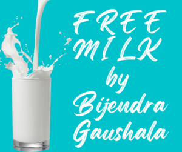

Free Milk By Bijendra Gaushala
 Bijendra Gaushala has always been at the forefront of innovative ideas to promote sustainable living and to uphold the value of community service. Our latest endeavor, the Free Milk Scheme, is a testament to this commitment.
How Does the Scheme Work?
It's simple yet groundbreaking. Individuals or entities can invest INR 1 lakh with Bijendra Gaushala. In return, we provide them with free milk for an entire decade. That's 10 years of fresh, pure, and nutrient-rich milk without any additional costs. And the best part? At the end of the 10-year period, we return the entire investment of INR 1 lakh to the investor. It sounds too good to be true, right? But it's very much a reality, thanks to our diversified income streams at the Gaushala.
The Sustainability Behind the Scheme
You might wonder, how is such a scheme financially viable for Bijendra Gaushala? The answer lies in our multiple sources of income within the Gaushala. These revenue streams ensure a steady flow of funds, enabling us to support this initiative while ensuring that every investor gets their money back at the end of the term.
The Mutual Benefits
For the Investor: Not only do investors get a steady supply of high-quality milk for 10 years, but they also have the peace of mind knowing that their investment is safe and will be returned in full. It's a rare opportunity to enjoy the benefits of an investment both in kind (through milk) and in cash (with the return of the principal amount).
For the Gaushala This scheme allows us to strengthen our bond with the community. The investments help us in the short term by providing the capital to enhance our operations, invest in the well-being of our cows, and further diversify our revenue channels. Over time, this only strengthens our capacity to give back even more to the society and our investors.
In Conclusion
The Free Milk Scheme at Bijendra Gaushala is more than just a financial arrangement. It's a partnership between us and the community. It's about trust, mutual growth, and the shared belief in sustainable living. We invite you to be a part of this journey, where together, we pave the way for a healthier community and a brighter future.
If you're interested in learning more about this initiative or if you wish to become an investor, please reach out to us. Let's create a ripple of positive change, one glass of milk at a time.